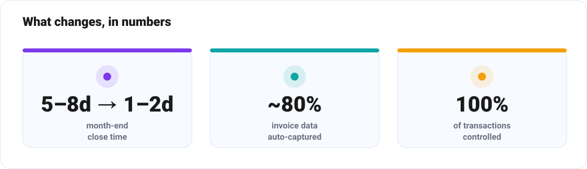
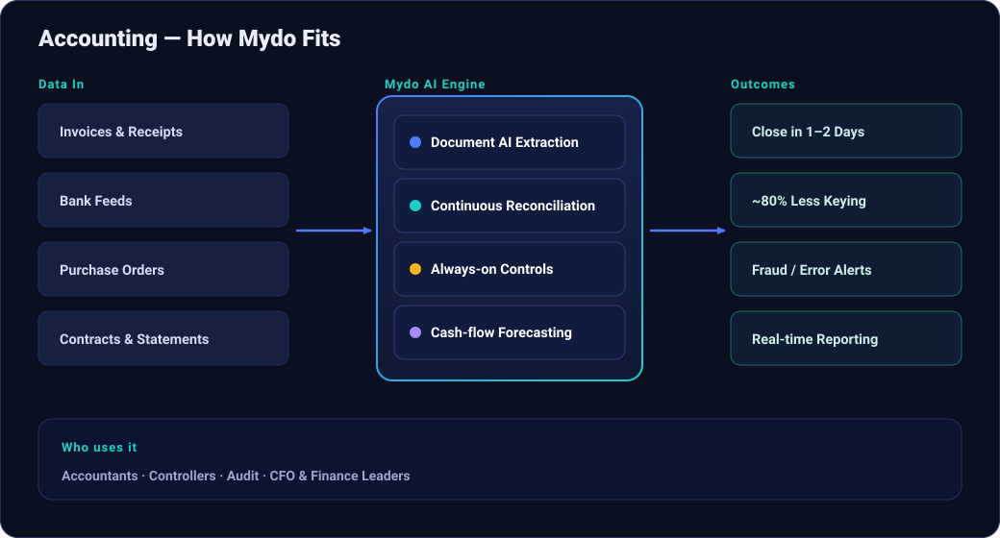
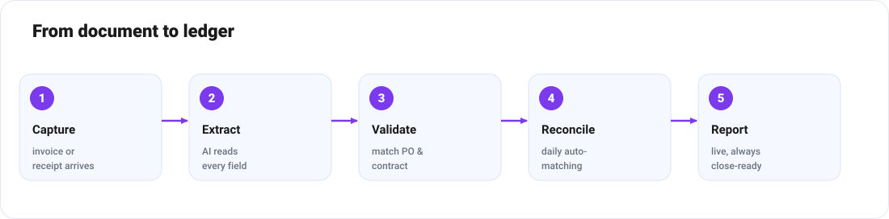

From Month-End Marathon to Continuous Close: How AI Transforms Accounting
How document AI and continuous reconciliation turn the month-end marathon into a close that's basically always done.
Ask any finance team what they actually spend their week on, and the honest answer is rarely "analysis." It's chasing invoices, keying numbers from PDFs, matching bank lines to ledgers, untangling intercompany entries, and bracing for the month-end close. The skilled people you hired to interpret the business spend most of their time assembling the data instead of explaining it.
Biloop flips that ratio. By combining document AI, automated reconciliation and continuous controls, Biloop takes over the repetitive plumbing of accounting so the team can move from recording the past to steering the future.

Where the time really goes
1. Document drudgery
Invoices, receipts, bank statements and contracts arrive as PDFs, scans and photos in dozens of formats. Someone has to read each one and type it into the system. It's slow, mind-numbing, and a constant source of typos.
2. Reconciliation
Matching thousands of bank transactions to ledger entries, supplier statements to payables, and intercompany balances across entities is the classic month-end bottleneck — and the place errors love to hide.
3. The close itself
A multi-day close means leadership sees the numbers a week after the month they describe. By the time a problem surfaces, it's history.
4. Compliance, audit and fraud risk
Controls are often sampled, not continuous. Duplicate payments, policy breaches and anomalies slip through until an auditor — or a loss — finds them.
How Biloop transforms the finance function


Document AI that reads like your best clerk
Biloop ingests invoices, receipts and statements from email, upload or scan, and extracts every field — supplier, line items, tax, totals, dates — with high accuracy and confidence scoring. It validates against purchase orders and contracts, codes the entry to the right account, and routes anything uncertain to a human for a one-click confirmation.
Autonomous, continuous reconciliation
Rather than a month-end scramble, Biloop matches bank lines, payables, receivables and intercompany balances every day. Clean matches post automatically; only true exceptions reach a person. The ledger is effectively always close-ready.
Always-on controls and anomaly detection
Biloop checks every transaction, not a sample — flagging duplicate invoices, out-of-policy spend, unusual vendors, round-number anomalies and suspicious timing. It's a tireless second set of eyes that strengthens the audit trail and catches issues while they're still small.
Conversational reporting
A CFO can ask, "Why did gross margin drop in Q2?" or "Show me overdue receivables over 60 days by customer," and get an answer immediately, with the supporting transactions one click away. Board packs and management reports assemble themselves from live data.
Cash-flow and scenario forecasting
Biloop projects cash position from real payables, receivables and historical patterns, and lets you model scenarios — a delayed payment, a new hire, an FX swing — so finance can advise the business instead of just reporting to it.
For accounting firms, not just in-house teams
For practices serving many clients, Biloop is a force multiplier: onboard a client's documents and bank feeds, let automation handle the bookkeeping baseline, and redirect billable hours toward advisory work. The same accountant can serve more clients with higher quality — and a clean, defensible audit trail for every one.
Before and after
| Task | Before Biloop | With Biloop |
|---|---|---|
| Invoice entry | Manual keying | AI extraction + validation |
| Reconciliation | Month-end batch | Daily & continuous |
| Close | 5–8 days | 1–2 days / continuous |
| Controls | Sampled | 100% of transactions |
| Reporting | Backward-looking | Real-time & conversational |
Low-risk by design
Biloop layers on top of your existing accounting or ERP system. Humans stay in control of approvals; automation simply removes the manual assembly. Most teams start by automating accounts payable, prove the time saved within weeks, and expand from there.